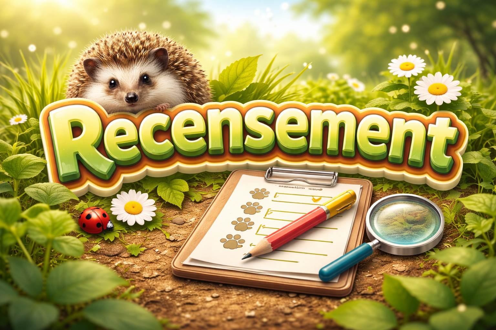
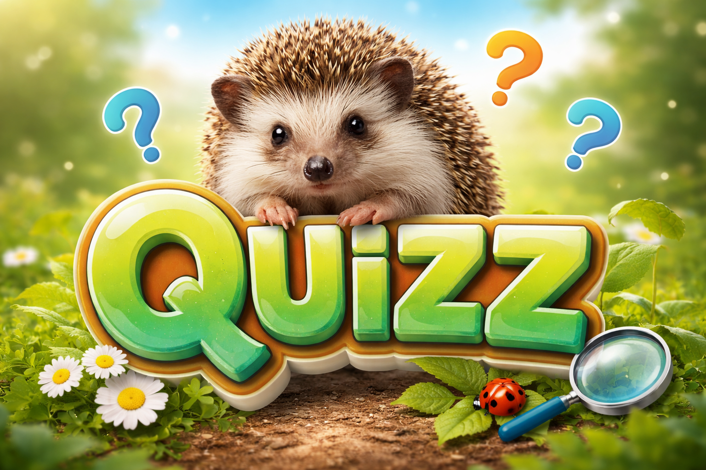
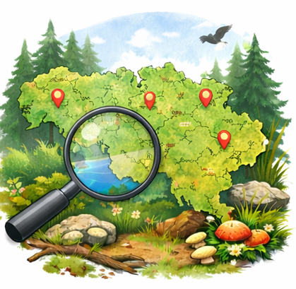
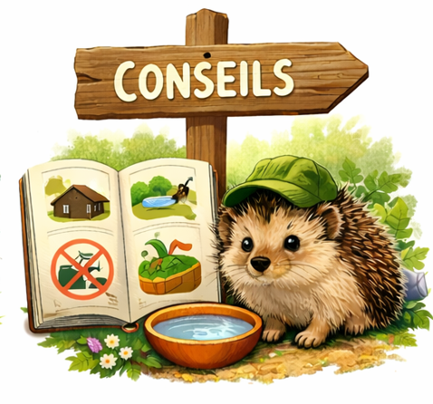

À propos
Qui sommes-nous ?
Nous sommes un groupe de 6 étudiants en bachelier de bioingénieurie à l’Université libre de Bruxelles. Notre projet consiste à identifier les lacunes de données en Wallonie sur le hérisson d’Europe (Erinaceus europaeus) et à proposer et développer des pistes et outils concrets d’amélioration pour renforcer la conservation de l’espèce. Ce projet nous tient à cœur car, en tant que futures scientifiques, nous pensons qu’il est important de s’intéresser à la biodiversité qui nous entoure et d’en prendre soin.
Qui sont les hérissons ?
En Belgique, le hérisson présent est l’Erinaceus europaeus, aussi appelé hérisson d’Europe. Il s’agit d’un petit mammifère insectivore nocturne, reconnaissable à ses piquants et fréquent dans les jardins, parcs et milieux agricoles. Espèce protégée, il joue un rôle écologique important en régulant les populations d’invertébrés.
Pourquoi leur population diminue-t-elle ?
Les hérissons sont sur la liste rouge de l’UICN : ils passent de “préoccupation mineure” à “quasi menacé”. La population d’Erinaceus europaeus diminue principalement à cause de la fragmentation des habitats (urbanisation, routes, clôtures imperméables) qui limite ses déplacements. La mortalité routière est une cause majeure. L’usage de pesticides réduit aussi ses ressources alimentaires (insectes, invertébrés). Enfin, les robots tondeuses nocturnes, les jardins trop “propres” et la perte de sites d’hibernation aggravent le déclin.
Quels sont nos objectifs ?
Nous voudrions sensibiliser un maximum de personnes de tout âge et motiver les citoyens à s’intéresser davantage aux hérissons et à leur conservation. Nous voudrions également comprendre pourquoi en Wallonie les données sont insuffisantes (état des populations), comparé à la Flandres.
Nos Rubriques



Recensement
Participez à la collecte des observations de hérissons.

Quizz
Testez vos connaissances sur les hérissons et leur habitat.

Cartographie
Visualisez les données collectées sur la carte.

Conseils
Guide pour observer et protéger les hérissons.

Partenaires
Nos partenaires scientifiques et associatifs.

Qui sommes-nous
Découvrez notre équipe et notre démarche.
Contact
📧 projet_herisson@email.com
💻 GitHub : xxxxxxxxx-hub